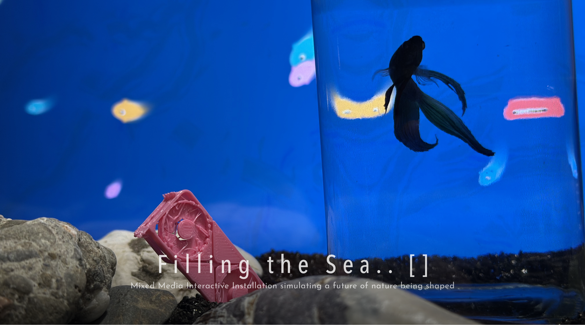
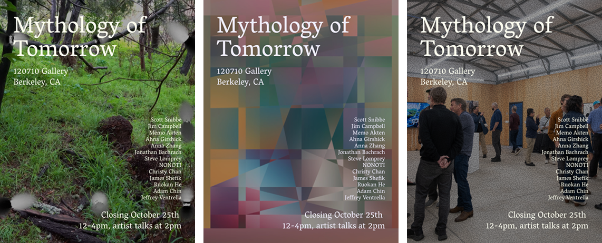
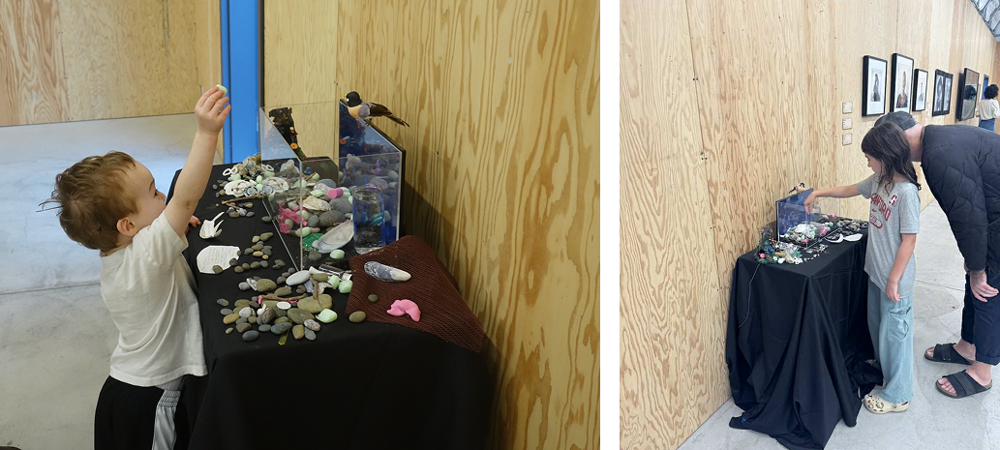
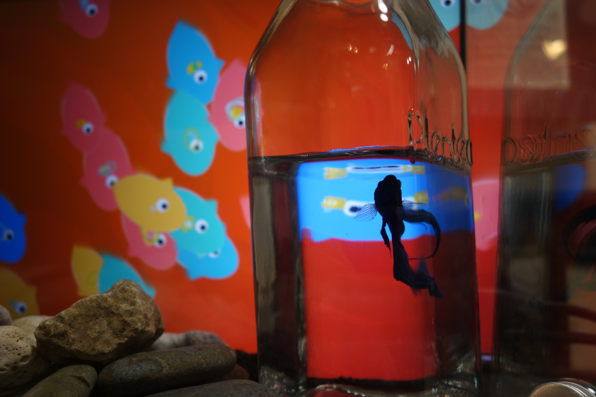

"Filling the Sea .. [ ], 2025"
“Filling the Sea…[ ]” is a future play on the Chinese myth “Jingwei Filling the Sea”. Jingwei, the daughter of Emperor Yan, drowned in the Eastern Sea and became a bird. Everyday since, Jingwei carries twigs and stones to fill the sea, believing that one day it’s possible. While ‘Jingwei’ was filling the sea out of her revenge, ‘filling the sea’ isn’t an unfamiliar action for us human these days. Actions such as filling the sea to create new land, dumping waste into the ocean, and even building underwater data centers are taking place—almost as if, one day, the sea could truly be filled.
“Filling the Sea…[ ]” is a future play on the Chinese myth “Jingwei Filling the Sea”. Jingwei, the daughter of Emperor Yan, drowned in the Eastern Sea and became a bird. Everyday since, Jingwei carries twigs and stones to fill the sea, believing that one day it’s possible. While ‘Jingwei’ was filling the sea out of her revenge, ‘filling the sea’ isn’t an unfamiliar action for us human these days. Actions such as filling the sea to create new land, dumping waste into the ocean, and even building underwater data centers are taking place—almost as if, one day, the sea could truly be filled.

"Filling the Sea.. [] was first shown in Berkeley's 120710 Gallery for the show "Mythology of Tomorrow". [ Curator: Hugh Leeman ]
Mythology, for millennia, has acted as an ancient technology, weaving itself into the cultural imagination, allowing humans to create meaning and social cohesion through stories; these stories, however, like the civilizations they support, all journey towards obsolescence. Today, we are witnessing such an obsolescence that has historically led to a crumbling of institutions and ideologies. As society moves through this process toward the unknown, we encounter the potential to evolve. Author and expert in mythology Joseph Campbell noted that all societies must undergo a transformative hero's journey to make new meaning through the hero's return with the so-called artifacts of the journey. Here, those artifacts manifest in art made with new media call us to reckon with the disorientation of the collapse of identities, systems, and worldviews, while other artworks illuminate acts of atonement, adaptation, and renewal, offering sparks to our imagination so that we may collectively envision the mythology of tomorrow.
Mythology, for millennia, has acted as an ancient technology, weaving itself into the cultural imagination, allowing humans to create meaning and social cohesion through stories; these stories, however, like the civilizations they support, all journey towards obsolescence. Today, we are witnessing such an obsolescence that has historically led to a crumbling of institutions and ideologies. As society moves through this process toward the unknown, we encounter the potential to evolve. Author and expert in mythology Joseph Campbell noted that all societies must undergo a transformative hero's journey to make new meaning through the hero's return with the so-called artifacts of the journey. Here, those artifacts manifest in art made with new media call us to reckon with the disorientation of the collapse of identities, systems, and worldviews, while other artworks illuminate acts of atonement, adaptation, and renewal, offering sparks to our imagination so that we may collectively envision the mythology of tomorrow.

In this installation-the aquarium simulates a piece of the ecosystem that we are experiencing while ‘filling the sea’,
visitors may help Jingwei by adding objects from a changing shoreline—whether natural like stones and branches, discarded like plastics, or fragments of unseen future objects—into the interactive aquarium sea,
each action shifting its fragile balance. And as time goes by, these debris accumulate, the simulated environment projects a fragile future that human’s continuing ‘unconscious’ actions are shaping,
and its consequences for the nature that we are living in.

In 120710 art gallery https://www.120710.art/show/21/

The artwork changes its visual look as time goes by.
This is a view after visitors interacting with the installation after a few days.